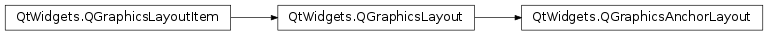
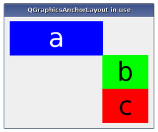

QGraphicsAnchorLayout¶
Note
This class was introduced in Qt 4.6.
Synopsis¶
Functions¶
- def
addAnchor(firstItem, firstEdge, secondItem, secondEdge) - def
addAnchors(firstItem, secondItem[, orientations=Qt.Horizontal | Qt.Vertical]) - def
addCornerAnchors(firstItem, firstCorner, secondItem, secondCorner) - def
anchor(firstItem, firstEdge, secondItem, secondEdge) - def
horizontalSpacing() - def
setHorizontalSpacing(spacing) - def
setSpacing(spacing) - def
setVerticalSpacing(spacing) - def
verticalSpacing()
Detailed Description¶
The
PySide2.QtWidgets.QGraphicsAnchorLayoutclass provides a layout where one can anchor widgets together in Graphics View.The anchor layout allows developers to specify how widgets should be placed relative to each other, and to the layout itself. The specification is made by adding anchors to the layout by calling
PySide2.QtWidgets.QGraphicsAnchorLayout.addAnchor(),PySide2.QtWidgets.QGraphicsAnchorLayout.addAnchors()orPySide2.QtWidgets.QGraphicsAnchorLayout.addCornerAnchors().Existing anchors in the layout can be accessed with the
PySide2.QtWidgets.QGraphicsAnchorLayout.anchor()function. Items that are anchored are automatically added to the layout, and if items are removed, all their anchors will be automatically removed.
Anchors are always set up between edges of an item, where the “center” is also considered to be an edge. Consider the following example:
layout.addAnchor(b, Qt.AnchorLeft, a, Qt.AnchorRight) layout.addAnchor(b, Qt.AnchorTop, a, Qt.AnchorBottom)Here, the right edge of item
ais anchored to the left edge of itemband the bottom edge of itemais anchored to the top edge of itemb, with the result that itembwill be placed diagonally to the right and below itemb.The
PySide2.QtWidgets.QGraphicsAnchorLayout.addCornerAnchors()function provides a simpler way of anchoring the corners of two widgets than the two individual calls toPySide2.QtWidgets.QGraphicsAnchorLayout.addAnchor()shown in the code above. Here, we see how a widget can be anchored to the top-left corner of the enclosing layout:layout.addCornerAnchors(a, Qt.TopLeftCorner, layout, Qt.TopLeftCorner)In cases where anchors are used to match the widths or heights of widgets, it is convenient to use the
PySide2.QtWidgets.QGraphicsAnchorLayout.addAnchors()function. As with the other functions for specifying anchors, it can also be used to anchor a widget to a layout.
Size Hints and Size Policies in an Anchor Layout¶
PySide2.QtWidgets.QGraphicsAnchorLayoutrespects each item’s size hints and size policies. Note that there are some properties ofPySide2.QtWidgets.QSizePolicythat arenot respected.
Spacing within an Anchor Layout¶
The layout may distribute some space between the items. If the spacing has not been explicitly specified, the actual amount of space will usually be 0.
However, if the first edge is the opposite of the second edge (e.g., the right edge of the first widget is anchored to the left edge of the second widget), the size of the anchor will be queried from the style through a pixel metric:
PM_LayoutHorizontalSpacingfor horizontal anchors andPM_LayoutVerticalSpacingfor vertical anchors.If the spacing is negative, the items will overlap to some extent.
Known Issues¶
There are some features that
PySide2.QtWidgets.QGraphicsAnchorLayoutcurrently does not support. This might change in the future, so avoid using these features if you want to avoid any future regressions in behaviour:
- Stretch factors are not respected.
QSizePolicy.ExpandFlagis not respected.- Height for width is not respected.
-
class
PySide2.QtWidgets.QGraphicsAnchorLayout([parent=nullptr])¶ Parameters: parent – PySide2.QtWidgets.QGraphicsLayoutItemConstructs a
PySide2.QtWidgets.QGraphicsAnchorLayoutinstance.parentis passed to QGraphicsLayout ‘s constructor.
-
PySide2.QtWidgets.QGraphicsAnchorLayout.addAnchor(firstItem, firstEdge, secondItem, secondEdge)¶ Parameters: - firstItem –
PySide2.QtWidgets.QGraphicsLayoutItem - firstEdge –
PySide2.QtCore.Qt.AnchorPoint - secondItem –
PySide2.QtWidgets.QGraphicsLayoutItem - secondEdge –
PySide2.QtCore.Qt.AnchorPoint
Return type: PySide2.QtWidgets.QGraphicsAnchorCreates an anchor between the edge
firstEdgeof itemfirstItemand the edgesecondEdgeof itemsecondItem. The spacing of the anchor is picked up from the style. Anchors between a layout edge and an item edge will have a size of 0. If there is already an anchor between the edges, the new anchor will replace the old one.firstItemandsecondItemare automatically added to the layout if they are not part of the layout. This means thatPySide2.QtWidgets.QGraphicsAnchorLayout.count()can increase by up to 2.The spacing an anchor will get depends on the type of anchor. For instance, anchors from the Right edge of one item to the Left edge of another (or vice versa) will use the default horizontal spacing. The same behaviour applies to Bottom to Top anchors, (but they will use the default vertical spacing). For all other anchor combinations, the spacing will be 0. All anchoring functions will follow this rule.
The spacing can also be set manually by using
QGraphicsAnchor.setSpacing()method.Calling this function where
firstItemorsecondItemare ancestors of the layout have undefined behaviour.- firstItem –
-
PySide2.QtWidgets.QGraphicsAnchorLayout.addAnchors(firstItem, secondItem[, orientations=Qt.Horizontal | Qt.Vertical])¶ Parameters: - firstItem –
PySide2.QtWidgets.QGraphicsLayoutItem - secondItem –
PySide2.QtWidgets.QGraphicsLayoutItem - orientations –
PySide2.QtCore.Qt.Orientations
Anchors two or four edges of
firstItemwith the corresponding edges ofsecondItem, so thatfirstItemhas the same size assecondItemin the dimensions specified byorientations.For example, the following example anchors the left and right edges of two items to match their widths:
layout.addAnchor(b, Qt.AnchorLeft, c, Qt.AnchorLeft) layout.addAnchor(b, Qt.AnchorRight, c, Qt.AnchorRight)
This can also be achieved using the following line of code:
layout.addAnchors(b, c, Qt.Horizontal)
- firstItem –
-
PySide2.QtWidgets.QGraphicsAnchorLayout.addCornerAnchors(firstItem, firstCorner, secondItem, secondCorner)¶ Parameters: - firstItem –
PySide2.QtWidgets.QGraphicsLayoutItem - firstCorner –
PySide2.QtCore.Qt.Corner - secondItem –
PySide2.QtWidgets.QGraphicsLayoutItem - secondCorner –
PySide2.QtCore.Qt.Corner
Creates two anchors between
firstItemandsecondItemspecified by the corners,firstCornerandsecondCorner, where one is for the horizontal edge and another one for the vertical edge.This is a convenience function, since anchoring corners can be expressed as anchoring two edges. For instance:
layout.addAnchor(a, Qt.AnchorTop, layout, Qt.AnchorTop) layout.addAnchor(a, Qt.AnchorLeft, layout, Qt.AnchorLeft)
This can also be achieved with the following line of code:
layout.addCornerAnchors(a, Qt.TopLeftCorner, layout, Qt.TopLeftCorner)
If there is already an anchor between the edge pairs, it will be replaced by the anchors that this function specifies.
firstItemandsecondItemare automatically added to the layout if they are not part of the layout. This means thatPySide2.QtWidgets.QGraphicsAnchorLayout.count()can increase by up to 2.- firstItem –
-
PySide2.QtWidgets.QGraphicsAnchorLayout.anchor(firstItem, firstEdge, secondItem, secondEdge)¶ Parameters: - firstItem –
PySide2.QtWidgets.QGraphicsLayoutItem - firstEdge –
PySide2.QtCore.Qt.AnchorPoint - secondItem –
PySide2.QtWidgets.QGraphicsLayoutItem - secondEdge –
PySide2.QtCore.Qt.AnchorPoint
Return type: PySide2.QtWidgets.QGraphicsAnchorReturns the anchor between the anchor points defined by
firstItemandfirstEdgeandsecondItemandsecondEdge. If there is no such anchor, the function will return 0.- firstItem –
-
PySide2.QtWidgets.QGraphicsAnchorLayout.horizontalSpacing()¶ Return type: PySide2.QtCore.qrealReturns the default horizontal spacing for the anchor layout.
-
PySide2.QtWidgets.QGraphicsAnchorLayout.setHorizontalSpacing(spacing)¶ Parameters: spacing – PySide2.QtCore.qrealSets the default horizontal spacing for the anchor layout to
spacing.
-
PySide2.QtWidgets.QGraphicsAnchorLayout.setSpacing(spacing)¶ Parameters: spacing – PySide2.QtCore.qrealSets the default horizontal and the default vertical spacing for the anchor layout to
spacing.If an item is anchored with no spacing associated with the anchor, it will use the default spacing.
PySide2.QtWidgets.QGraphicsAnchorLayoutdoes not support negative spacings. Setting a negative value will unset the previous spacing and make the layout use the spacing provided by the current widget style.
-
PySide2.QtWidgets.QGraphicsAnchorLayout.setVerticalSpacing(spacing)¶ Parameters: spacing – PySide2.QtCore.qrealSets the default vertical spacing for the anchor layout to
spacing.
-
PySide2.QtWidgets.QGraphicsAnchorLayout.verticalSpacing()¶ Return type: PySide2.QtCore.qrealReturns the default vertical spacing for the anchor layout.
© 2018 The Qt Company Ltd. Documentation contributions included herein are the copyrights of their respective owners. The documentation provided herein is licensed under the terms of the GNU Free Documentation License version 1.3 as published by the Free Software Foundation. Qt and respective logos are trademarks of The Qt Company Ltd. in Finland and/or other countries worldwide. All other trademarks are property of their respective owners.